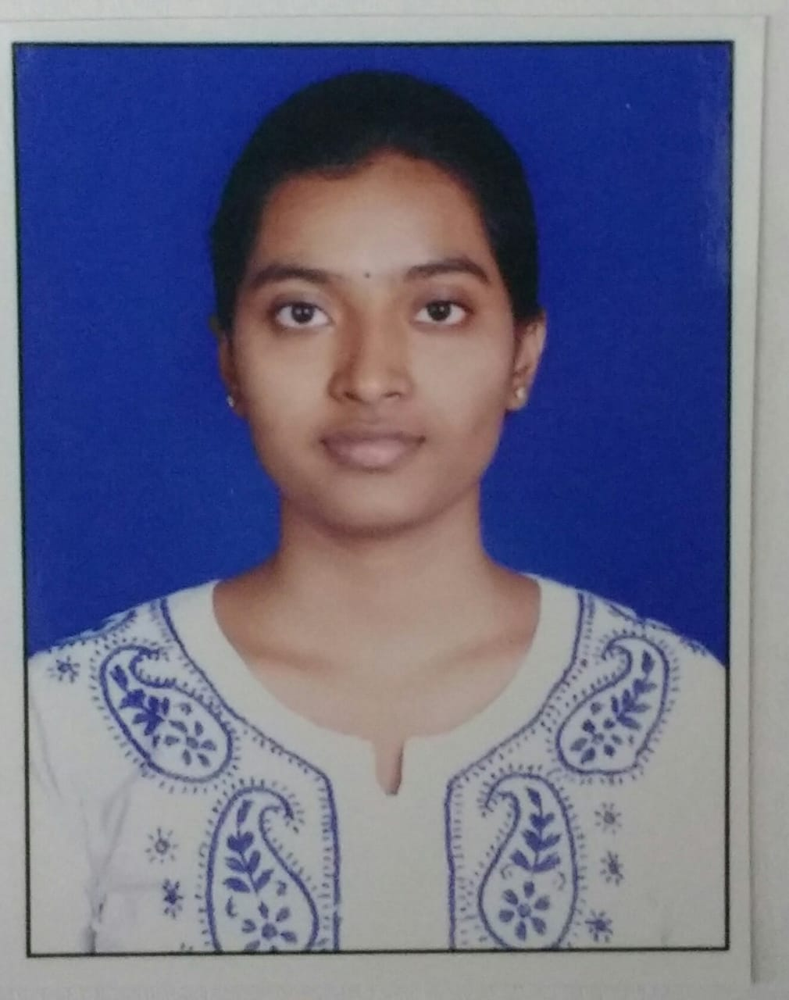

<!DOCTYPE html>
<html> 
    <title>Keerthi - Resume</title>
    <script src="https://kit.fontawesome.com/ac6d689bcc.js" crossorigin="anonymous"></script>
    <link rel = "stylesheet" type = "text/css" href = "style.css"> 
</html>

<body>

    <div class="container">
        <div class="header">
            <p class="box"></p>
               
            <div class="roundedrect  ">KEERTHI KUMMARI</div>       
    </div>
    
    <!-- <section class="head">
        
        <div class="roundBox">KEERTHI KUMMARI</div>
    </section> -->
    <section class="address">
        Hyderabad - 500059 | Hyderabad | <a href="mailto:keerthikummari@gmail.com"> keerthikummari@gmail.com </a>
    </section>
    
    <div class ="row">
        <div class="column">
    <section class="Profile">
        <h2><i class="fas fa-user " style="font-size:24px;color:orange"></i>    Profile</h2>
        <p>To be a part of organization that helps to enhance my professional and leadership skills and would lead me for a better career and continuous learning with every step.</p>
    </section>

    <section class="skills">
        <h2><i class="fas fa-flask" style="font-size:24px;color:orange"></i>   Skills</h2>
        <ul>
            <li>
                <h3>Technical Skills</h3>
                <div class = "TechSkills">
                <ul>
                    <li>JavaScript</li>
                    <li>HTML</li>
                    <li>CSS</li>
                    <li>React</li>
                    <li>Redux</li>
                    <li>Mongo</li>
                </ul>
                    <ul>
                        <li><progress max ="100" value ="50"></progress></li>
                        <li><progress max ="100" value ="50"></progress></li>
                        <li><progress max ="100" value ="50"></progress></li>
                        <li><progress max ="100" value ="50"></progress></li>
                        <li><progress max ="100" value ="50"></progress></li>
                        <li><progress max ="100" value ="50"></progress></li>
                    </ul>
                </div>
            </li>
            <li>
                <h3>Additional Skills</h3>
                <div class ="AddSkills"><ul>
                    <li>Project Management</li>
                    <li>Fundraising</li>
                </ul>
                <ul>
                    <li><progress max ="100" value ="50"></progress></li>
                    <li><progress max ="100" value ="50"></progress></li>                
                </ul>
            </div>
    </section>

    <section class ="WorkExp">
        <h2><i class="fas fa-briefcase" style="font-size:24px;color:orange"></i>   Work Experience</h2>
        <div class="roleDate">
            <span class="role"><b>Software Engineer</b></span>
            <span class="dur">12/2018 - till Date</span>
        </div>
        <p class="company">Accenture</p>
        <ul>
            <li><p>Worked on a budgeting tool, which helps user to configure resources hierarchy required to complete the project and cost that will be spent to complete the project</p></li>
        </ul>
    </section>
</div>
<div class="vertical"></div>
<div class="column ">
    <h2><i class="fas fa-briefcase" style="font-size:24px;color:orange"></i>   Work Experience</h2>
        <div class="roleDate">
            <span class="role"><b>Software Engineer</b></span>
            <span class="dur">12/2018 - till Date</span>
        </div>
        <p class="company">Accenture</p>
    <ul>
        <li><p>Contributed to the implementation of a reporting applications, which collated bulk data of all aspects, metrics, narratives and demographics of a project</p></li>
    </ul>

    
    <section class="WorkExp">
        <h2><i class="fas fa-graduation-cap" style="font-size:24px;color:orange"></i>   Education</h2>
        <div class="roleDate">
            <span class="role"><b>Electronics and Communication Engineering</b></span>
            <span class="dur">06/2014 - 04/2018</span>
        </div>
        <p class="company">Bhoj Reddy College</p>
                <ul>
                    <li><p>Completed B.Tech (Electronics and Communication engineering) from Bhoj Reddy Engineering College-JNTU-H with an aggregate of 65.31%</p>
                    </li>
                    <li>Created a module/interface between LCD and 8051 microcontroller for scrolling contents on it. The contents can be scrolled from left to right or right to left in either first or second line of the LCD screen. This can be implemented in the places where continuous display of information is crucial, such as in busses, airports, railway stations and many more.
                    </li>
                    <li>Also created a module of Women security system using ARM 7. The main objective of this project is to develop a real-time tracker with a panic button and other alert features that will monitor a subject’s every move and allow them to easily alert to the centralized station if in danger. When people in centralized station pulls up the GPS tracking system data, from continuous alert message for every 10-15 sec will be sent to centralized station. The GPS tracking device then provides exact location of where the person in danger is.
                    </li>
                </ul>
        <div class="roleDate">
            <span class="role"><b>MPC</b></span>
            <span class="dur">06/2012 - 02/2014</span>
        </div>
                <p class="company">Narayana Junior College</p>
            <p>XII from board of Intermediate Education, Telangana with an aggregate of 90.3%</p>
            
        <div class="roleDate">
            <span class="role"><b>X Standard</b></span>
            <span class="dur">2012 passout</span>
        </div>
                    <p class="company">Johnson Grammar School</p>                
            <p>X from Indian Certificate for Secondary Education (ICSE), Telangana with an aggregate of 78%</p>
    </section>
</div>
</div>
</body>